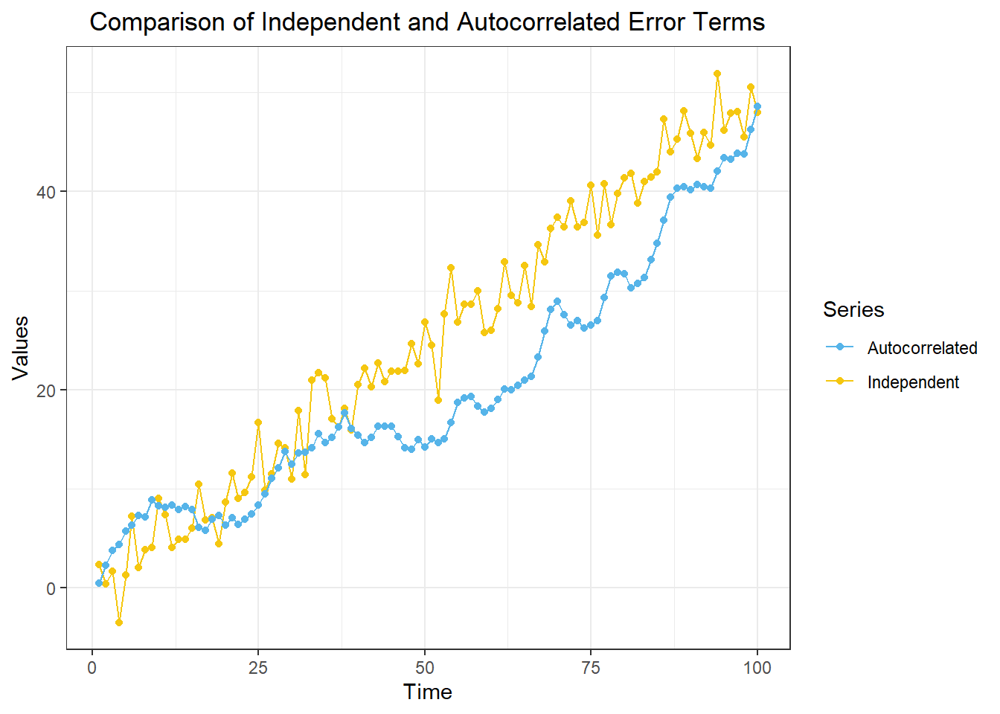
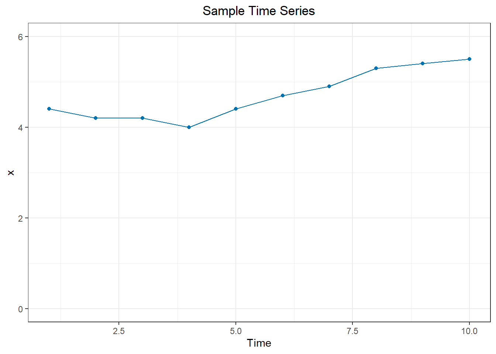
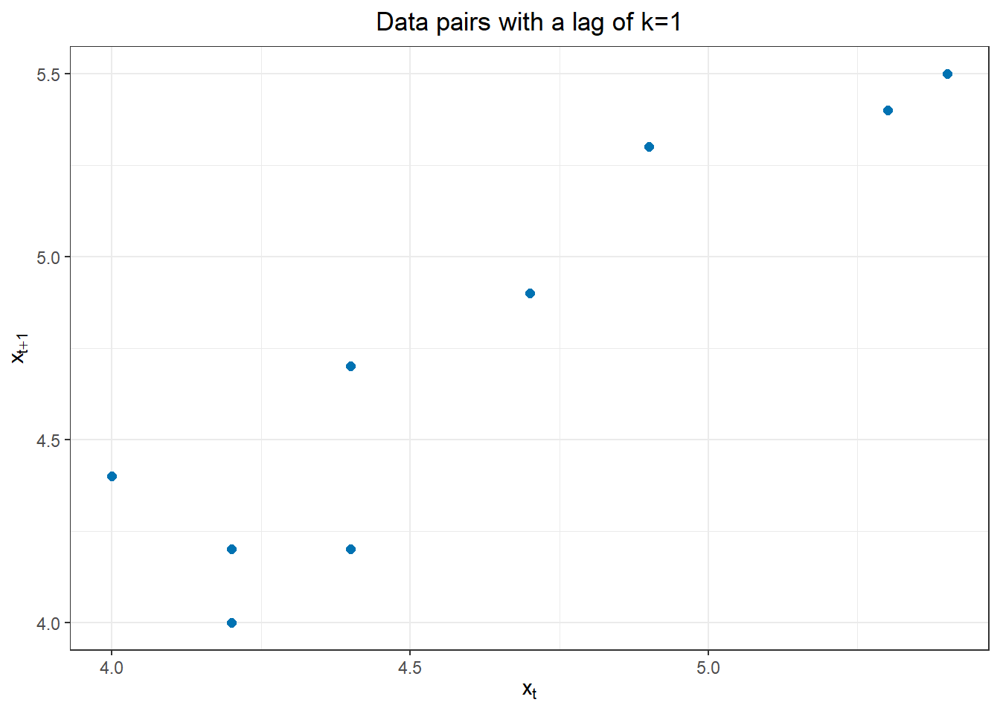
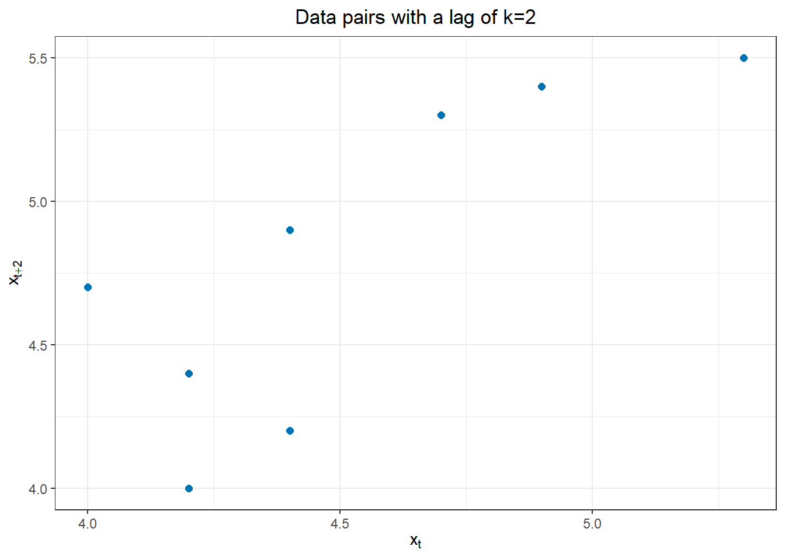
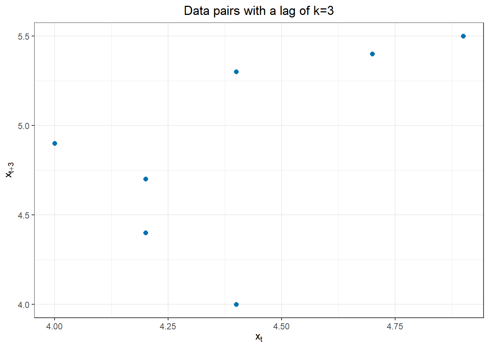
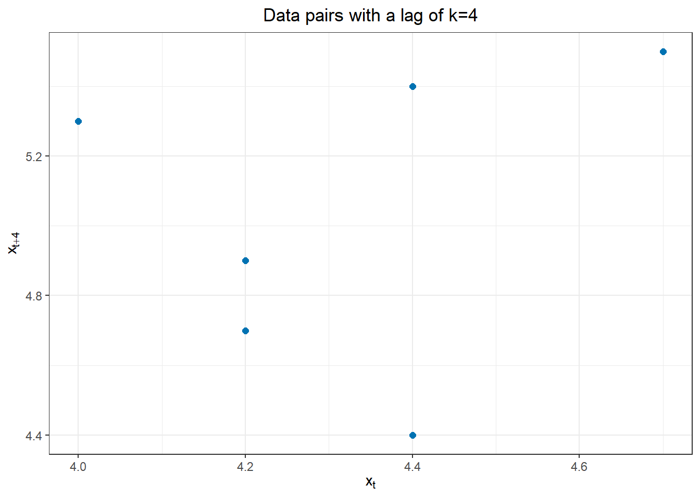

Autocorrelation Concepts
Chapter 2: Lesson 2
Learning Outcomes
Define key terms in time series analysis
- Define the ensemble of a time series
- Define the expected value (or mean function) of a time series model
- Define the sample estimate of the population mean of a time series
- Define the variance function of a time series model
- State the constant variance estimator for a time series model
- Explain the stationarity assumption
- Explain the stationary variance assumption
- Define lag
- Define autocorrelation
- Define the second-order stationary time series
- Explain the autocovariance function in Equation (2.11)
- Explain the lag k autocorrelation function in Equation (2.12)
- Define the autocovariance function, acvf
- Define the sample autocorrelation function, acf
Calculate sample estimates of autocovariance and autocorrelation functions from time series data
- Define the sample autocovariance function, c_k
- Define the sample autocorrelation function, r_k
Preparation
- Read Sections 2.2.5 and 2.3-2.5
Learning Journal Exchange (10 min)
- Review another student’s journal
- What would you add to your learning journal after reading your partner’s?
- What would you recommend your partner add to their learning journal?
- Sign the Learning Journal review sheet for your peer
Hands-on Exercise – Exploring Sample Autocorrelation (40 min)
Autocovariance and Autocorrelation
We will use the following data to explore the concepts of autovariance and autocorrelation.
| t | $$ x_t $$ |
|---|---|
| 1 | 4.4 |
| 2 | 4.2 |
| 3 | 4.2 |
| 4 | 4.0 |
| 5 | 4.4 |
| 6 | 4.7 |
| 7 | 4.9 |
| 8 | 5.3 |
| 9 | 5.4 |
| 10 | 5.5 |
You can use this R command to read in the observations.
x <- c( 4.4, 4.2, 4.2, 4, 4.4, 4.7, 4.9, 5.3, 5.4, 5.5 )
We will use the sample mean of these data repeatedly. The value of \(\bar x\) is:
\[ \bar x = \frac{1}{n} \sum\limits_{t=1}^{n} x_t = \frac{1}{10} \cdot 47 = 4.7 \]
We will be finding the autocovariance and correlation of a time series with itself. First, we start with a lag of 1. With a lag of 1 the corresponding values of the time series that are being compared are shifted by one time unit. Then, we will consider any integer lag: lag \(k\).
Lag \(k\) Sample Autocovariance Function (acvf), \(c_k\)
The lag \(k\) sample autocovariance function, acvf, denoted \(c_k\), is defined as
\[ c_k = \frac{1}{n} \sum\limits_{t=1}^{n-k}(x_t-\bar x)(x_{t+k}-\bar x) \]
We denote the lag by the letter \(k\), where \(k \ge 0\). This is the number of values the data set is shifted to compute the autocovariance.
Lag \(k=1\) Sample Autocovariance Function, \(c_1\)
We will now find the autocovariance between the values in a time series (\(x = x_t\)) and the same values, shifted by one unit of time (\(y = x_{t+1}\)).
| t | $$ x_t $$ | $$ x_{t+k} $$ | $$ x_t-\bar x $$ | $$ (x_t-\bar x)^2 $$ | $$ x_{t+k}-\bar x$$ | $$ (x-\bar x)(x_{t+k}-\bar x) $$ |
|---|---|---|---|---|---|---|
| 1 | 4.4 | 4.2 | -0.3 | 0.09 | -0.5 | 0.15 |
| 2 | 4.2 | 4.2 | -0.5 | 0.25 | -0.5 | 0.25 |
| 3 | 4.2 | 4 | -0.5 | 0.25 | -0.7 | 0.35 |
| 4 | 4 | 4.4 | -0.7 | 0.49 | -0.3 | 0.21 |
| 5 | 4.4 | 4.7 | -0.3 | 0.09 | 0 | 0 |
| 6 | 4.7 | 4.9 | 0 | 0 | 0.2 | 0 |
| 7 | 4.9 | 5.3 | 0.2 | 0.04 | 0.6 | 0.12 |
| 8 | 5.3 | 5.4 | 0.6 | 0.36 | 0.7 | 0.42 |
| 9 | 5.4 | 5.5 | 0.7 | 0.49 | 0.8 | 0.56 |
| 10 | 5.5 | — | 0.8 | 0.64 | — | — |
| sum | 47 | 42.6 | 0 | 2.7 | 0.3 | 2.06 |
The scatterplot below illustrates the relationship between the observed data (\(x_t\)) and the next observation (\(x_{t+1}\)).

In this example, the second variable is \(x_{t+1}\), where \(t>1\). the autocovariance of \(x_t\) and \(x_{t+1}\) is:
\[ c_1 = \frac{1}{n} \sum\limits_{t=1}^{n-1}(x_t-\bar x)(x_{t+1}-\bar x) = \frac{1}{10} \sum\limits_{t=1}^{9}(x_t-\bar x)(x_{t+1}-\bar x) = \frac{1}{10} \cdot 2.06 = 0.206 \]
This is the (auto)covariance of \(x\) with itself, but with a lag of 1 time unit. This is the value of the lag \(k=1\) autocovariance function, acvf_1.
Lag \(k\) Sample Autocorrelation Function (acf), \(r_k\)
The sample autocorrelation function, acf, denoted \(r_k\), where \(k\) is the lag, is defined as
\[ r_k = \frac{c_k}{c_0} = \frac{ \frac{1}{n} \sum\limits_{t=1}^{n-k}(x_t-\bar x)(x_{t+k}-\bar x) }{ \frac{1}{n} \sum\limits_{t=1}^{n}(x_t-\bar x)^2 } = \frac{ \sum\limits_{t=1}^{n-k}(x_t-\bar x)(x_{t+k}-\bar x) }{ \sum\limits_{t=1}^{n}(x_t-\bar x)^2 } \]
Note that \(c_0\) is the variance of \(x\), but computed by dividing by \(n\), instead of \(n-1\).
Lag \(k=1\) Sample Autocorrelation Function, \(r_1\)
We can compute the lag 1 autocorrelation or the autocorrelation of \(x\) with lag 1 as the quotient \(r_1 = \frac{c_1}{c_0}\). We have already determined that \(c_1 = 0.206\). We now compute \(c_0\):
\[ c_0 = \frac{1}{n} \sum\limits_{t=1}^{n-0} (x_t-\bar x)(x_{t+0}-\bar x) = \frac{1}{n} \sum\limits_{t=1}^{n} (x_t-\bar x)^2 = \frac{1}{10} \cdot 2.7 = 0.27 \]
We use \(c_0\) and \(c_1\) to compute \(r_1\). Here are two ways we can compute this value:
\[\begin{align*} r_1 &= \frac{c_1}{c_0} = \frac{ \frac{1}{n} \sum\limits_{t=1}^{9}(x_t-\bar x)(x_{t+1}-\bar x) }{ \frac{1}{n} \sum\limits_{t=1}^{10}(x_t-\bar x)^2 } = \frac{ \frac{1}{10} \cdot 2.06 }{ \frac{1}{10} \cdot 2.7 } = \frac{0.206}{0.27} = 0.763 \\ &= \frac{ \sum\limits_{t=1}^{9}(x_t-\bar x)(x_{t+1}-\bar x) }{ \sum\limits_{t=1}^{10}(x_t-\bar x)^2 } = \frac{2.06}{2.7} = 0.763 \end{align*}\]
- What does the lag 1 autocorrelation, \(c_1\), measure?
Lag \(k = 2\)
| t | $$ x_t $$ | $$ x_{t+k} $$ | $$ x_t-\bar x $$ | $$ (x_t-\bar x)^2 $$ | $$ x_{t+k}-\bar x$$ | $$ (x-\bar x)(x_{t+k}-\bar x) $$ |
|---|---|---|---|---|---|---|
| 1 | 4.4 | 4.2 | -0.3 | 0.09 | -0.5 | 0.15 |
| 2 | 4.2 | 4 | -0.5 | 0.25 | -0.7 | 0.35 |
| 3 | 4.2 | 4.4 | -0.5 | 0.25 | -0.3 | 0.15 |
| 4 | 4 | |||||
| 5 | 4.4 | |||||
| 6 | 4.7 | |||||
| 7 | 4.9 | 5.4 | 0.2 | 0.04 | 0.7 | 0.14 |
| 8 | 5.3 | 5.5 | 0.6 | 0.36 | 0.8 | 0.48 |
| 9 | 5.4 | — | 0.7 | 0.49 | — | — |
| 10 | 5.5 | — | 0.8 | 0.64 | — | — |
| sum | 47 |
The figure below illustrates the relationship between \(x_t\) and \(x_{t+2}\).

Lag \(k = 3\)
| t | $$ x_t $$ | $$ x_{t+k} $$ | $$ x_t-\bar x $$ | $$ (x_t-\bar x)^2 $$ | $$ x_{t+k}-\bar x$$ | $$ (x-\bar x)(x_{t+k}-\bar x) $$ |
|---|---|---|---|---|---|---|
| 1 | 4.4 | 4 | -0.3 | 0.09 | -0.7 | 0.21 |
| 2 | 4.2 | 4.4 | -0.5 | 0.25 | -0.3 | 0.15 |
| 3 | 4.2 | 4.7 | -0.5 | 0.25 | 0 | 0 |
| 4 | 4 | 4.9 | -0.7 | 0.49 | 0.2 | -0.14 |
| 5 | 4.4 | 5.3 | -0.3 | 0.09 | 0.6 | -0.18 |
| 6 | 4.7 | 5.4 | 0 | 0 | 0.7 | 0 |
| 7 | 4.9 | 5.5 | 0.2 | 0.04 | 0.8 | 0.16 |
| 8 | 5.3 | — | 0.6 | 0.36 | — | — |
| 9 | 5.4 | — | 0.7 | 0.49 | — | — |
| 10 | 5.5 | — | 0.8 | 0.64 | — | — |
| sum | 47 | 34.2 | 0 | 2.7 | 1.3 | 0.2 |
The figure below illustrates the correlations between \(x_t\) and \(x_{t+3}\). Note that \(c_3 = \dfrac{0.2}{10} = 0.02\) and \(r_3 = \dfrac{0.02}{0.27} = 0.0741\).

Lag \(k = 4\)
| t | $$ x_t $$ | $$ x_{t+k} $$ | $$ x_t-\bar x $$ | $$ (x_t-\bar x)^2 $$ | $$ x_{t+k}-\bar x$$ | $$ (x-\bar x)(x_{t+k}-\bar x) $$ |
|---|---|---|---|---|---|---|
| 1 | 4.4 | |||||
| 2 | 4.2 | |||||
| 3 | 4.2 | |||||
| 4 | 4 | |||||
| 5 | 4.4 | |||||
| 6 | 4.7 | |||||
| 7 | 4.9 | |||||
| 8 | 5.3 | |||||
| 9 | 5.4 | |||||
| 10 | 5.5 | |||||
| sum | 47 |
The figure below illustrates the correlations between \(x_t\) and \(x_{t+4}\).

Class Activity: Using R to compute the acvf and acf (5 min)
We will continue to use the following sample data.
x <- c( 4.4, 4.2, 4.2, 4, 4.4, 4.7, 4.9, 5.3, 5.4, 5.5 )
df <- data.frame(x = x)acvf
This code gives the values of the acvf.
acf(df$x, plot=FALSE, type = "covariance")
Autocovariances of series 'df$x', by lag
0 1 2 3 4 5 6 7 8 9
0.270 0.206 0.121 0.020 -0.064 -0.113 -0.127 -0.093 -0.061 -0.024 acf
We can obtain the acf by changing the argument for the paramter type to "correlation".
acf(df$x, plot=FALSE, type = "correlation")
Autocorrelations of series 'df$x', by lag
0 1 2 3 4 5 6 7 8 9
1.000 0.763 0.448 0.074 -0.237 -0.419 -0.470 -0.344 -0.226 -0.089 Homework Preview (5 min)
- Review upcoming homework assignment
- Clarify questions